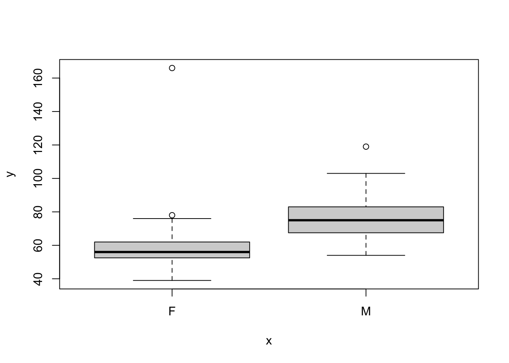
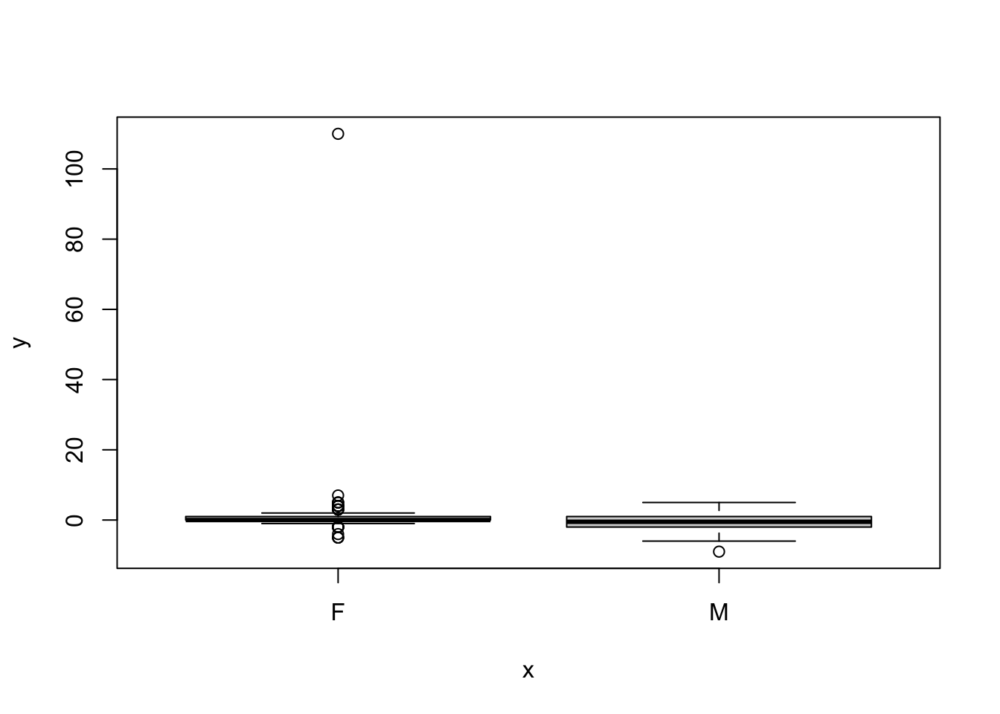
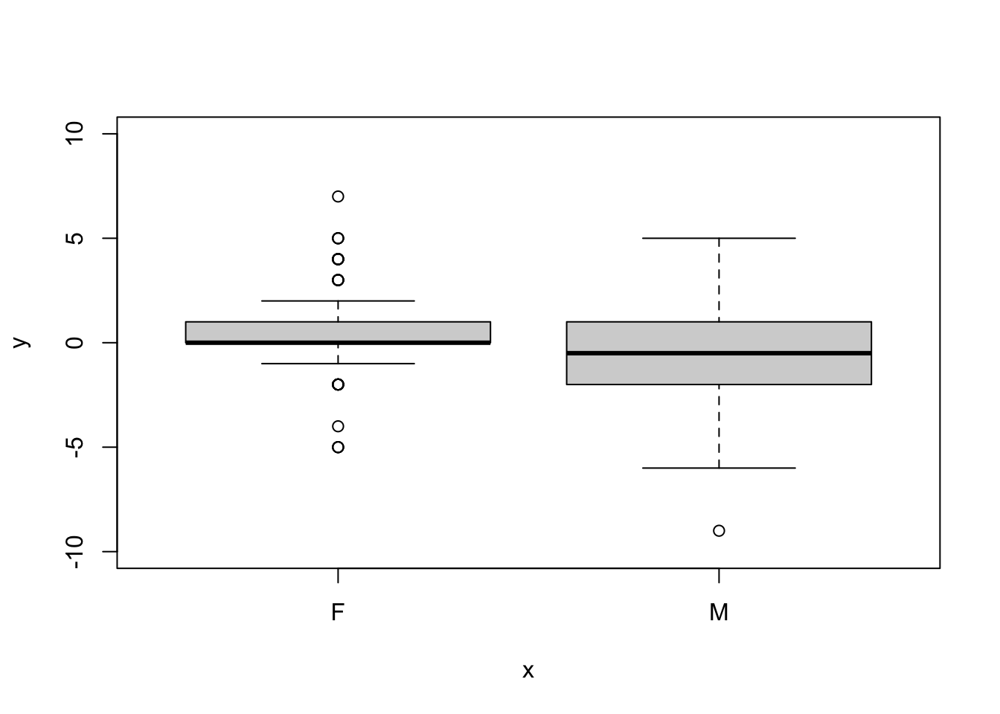
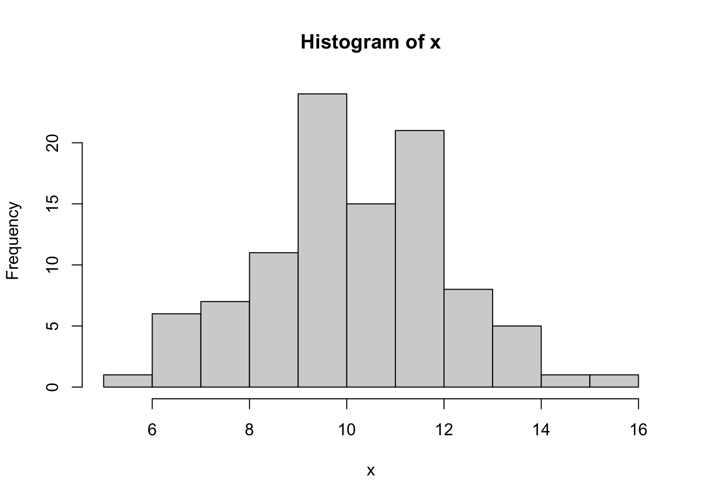
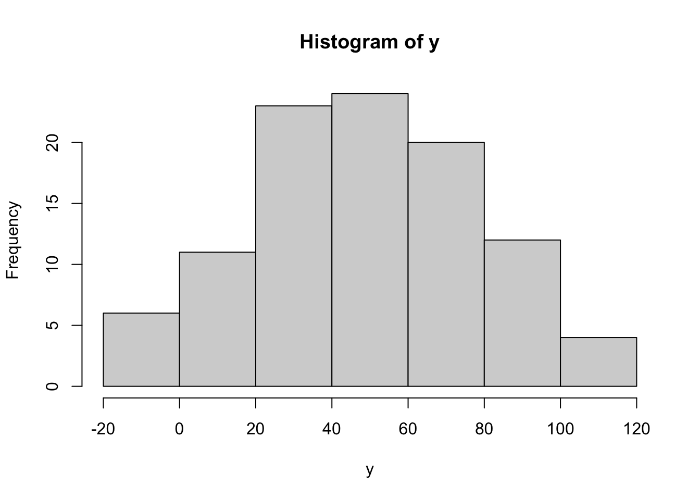

2 + 3 # addition[1] 52 * 3 # multiplication[1] 62 ^ 3 # exponentiation[1] 8x <- 7 # advisable to use '<-' instead of '='
y <- 8
x + y[1] 15x * y[1] 56(x + y) ^ 2[1] 225sum(1:100) # Gauss's problem (n*(n+1) / 2)[1] 5050In this section, you will learn the basic arithmetic operations and how to assign values to variables in R. These fundamental operations are essential for performing some of our later calculations and when manipulating data (such as creating new variables in a dataset or transforming data for our analyses).
Now, let’s start with some basic algebra. In it’s simplest form, R is “just” a calculator. You will learn how to perform basic arithmetic operations and assign values to variables in R. This will form the foundation of your data manipulation skills.
2 + 3 # addition[1] 52 * 3 # multiplication[1] 62 ^ 3 # exponentiation[1] 8x <- 7 # advisable to use '<-' instead of '='
y <- 8
x + y[1] 15x * y[1] 56(x + y) ^ 2[1] 225sum(1:100) # Gauss's problem (n*(n+1) / 2)[1] 5050R follows basic mathematical rules. So let’s learn the importance of the order of operations in mathematical expressions as you already know it (e.g., from your previous math and stats classes). Understanding that R follows the exact same rules you learned in prior math classes ensures you interpret code and perform calculations correctly.
2 * 3 - 5[1] 12 * (3 - 5)[1] -4Now, let’s take a look at some more of R’s built-in functions for various calculations. Knowing how to use these functions and access their documentation is vital for efficient coding and problem-solving.
max(1, 3, 7, 9)[1] 9min(1, 3, 7, 9)[1] 1log(100)[1] 4.60517log(100, base = 10)[1] 2log(100, b = 10) # argument abbreviation[1] 2?log # provides help on the log functionLearning R can be tedious at the beginning and you might feel like not ever really mastering it. But you’re not alone! Learning R means constantly using the internal help functions (and Google - or better ChatGPT and other LLMs - for external support). Let’s explore the internal help system.
?mean #pulls up manual entry for a function in separate "help" RStudio pane
example("mean") #print some examples for this function
mean> x <- c(0:10, 50)
mean> xm <- mean(x)
mean> c(xm, mean(x, trim = 0.10))
[1] 8.75 5.50 apropos("mean") #used in which other functions? [1] ".colMeans" ".rowMeans" "colMeans" "kmeans"
[5] "mean" "mean.Date" "mean.default" "mean.difftime"
[9] "mean.POSIXct" "mean.POSIXlt" "rowMeans" "weighted.mean" help()Next, we will explore various data types and structures in R. We will cover numeric and integer data, character data, converting data types, logical operators, factors, working with vectors and subsetting, data frames, lists, and matrices. I first briefly introduce and explain each and then follow-up with corresponding R code chunks.
In this first code chunk, we create numeric and integer vectors using the c() function. We can view the vector using head() (or simply call the object, e.g. ‘y’ or ‘x’), calculate the mean and standard deviation using mean() and sd(), and check the class of the vectors using class(). The is.numeric() and is.character() functions test if a vector is numeric or character, respectively. The length() function returns the number of elements in a vector.
y <- c(3.4, 4.6) # note that "c(" begins a list
x <- c(1:10)#create a vector from 1 to 10 and assign it to variable x
head(x) [1] 1 2 3 4 5 6mean(x);sd(x)#use function mean() and sd() to summarize x. Note that ";" means run independently[1] 5.5[1] 3.02765class(x)[1] "integer"class(y)[1] "numeric"class((mean(x)))[1] "numeric"is.numeric(x)[1] TRUEis.character(x)[1] FALSElength(x) #calls how many items in vector[1] 10Now let’s create some character vectors using the rep() function. We can repeat elements of a vector a specified number of times. The nchar() function returns the character length of each element in a string vector, while length() returns the number of elements in the vector.
rep(c("stats","climbing")) # note that that strings go inside ""[1] "stats" "climbing"rep(c("stats","climbing"),times=3)[1] "stats" "climbing" "stats" "climbing" "stats" "climbing"z <- rep(c("stats","climbing"),times=3) #use repeat function; use two elements and make vector y as long as vector x
z[1] "stats" "climbing" "stats" "climbing" "stats" "climbing"nchar(z) #character length of each element of the string vector y[1] 5 8 5 8 5 8length(z) #[1] 6In this code chunk, I’ll briefly walk you through how to convert data types. We first create a numeric vector num using the seq() function. We can convert it to a character vector using as.character() and back to numeric using as.numeric(). The str() function assesses the structure of an object. Note that mathematical functions like mean() only work with numeric data. In R, missing data is represented as NA.
num <- seq(0,20,by=4)
num[1] 0 4 8 12 16 20str(num) #use the str() function to assess the 'structure' of an object, here numeric num [1:6] 0 4 8 12 16 20head(num)[1] 0 4 8 12 16 20charNum <- as.character(num)#convert from numeric to character data
class(charNum)[1] "character"back2num <- as.numeric(charNum)
back2num[1] 0 4 8 12 16 20class(back2num)[1] "numeric"mean(num)[1] 10mean(charNum) #mean (any many other math) function only for numeric dataWarning in mean.default(charNum): argument is not numeric or logical: returning
NA[1] NA# in R any blanks or missing data are represented NA In this code chunk, we explore logical operators in R. We can use operators like == (is equal to), != (is not equal to), <= (is smaller or equal to), etc., to perform logical comparisons on vectors. The resulting logical vector indicates which elements satisfy the condition.
num[1] 0 4 8 12 16 20num == 0 #any matches in vector num? [1] TRUE FALSE FALSE FALSE FALSE FALSEz[1] "stats" "climbing" "stats" "climbing" "stats" "climbing"z == "stats" #examines each element of vector z for string "stats"[1] TRUE FALSE TRUE FALSE TRUE FALSEz != "stats" # != means does NOT equal[1] FALSE TRUE FALSE TRUE FALSE TRUEnum <= 10[1] TRUE TRUE TRUE FALSE FALSE FALSE#See "?Logic" for list of operatorsFactors are like vectors but with special properties. Each unique value in a factor is called a “level”. In this code chunk, we create a factor vector f using factor() and rep(). We can convert a character vector to a factor using as.factor().
f <- rep(factor(x=c("Group A","Group B")),times =5)
f [1] Group A Group B Group A Group B Group A Group B Group A Group B Group A
[10] Group B
Levels: Group A Group Bclass(f)[1] "factor"group <- c("Group A","Group B")
class(group)[1] "character"group <- as.factor(group) # converts from char to factor class
class(group)[1] "factor"In this code chunk, we’ll learn how to interact with vectors and subsetting them. We can perform element-wise operations on vectors, such as multiplication and logical comparisons. The any() and all() functions test if any or all elements satisfy a condition, respectively. We can subset vectors using square brackets [] and various indexing methods, such as single elements, ranges, or logical vectors.
x;x*2 #use the numeric variable x and multiply each element by 2. ";" separates two distinct commands [1] 1 2 3 4 5 6 7 8 9 10 [1] 2 4 6 8 10 12 14 16 18 20k <-x*2
k <- log10(x)
k [1] 0.0000000 0.3010300 0.4771213 0.6020600 0.6989700 0.7781513 0.8450980
[8] 0.9030900 0.9542425 1.0000000x < 5 #logical comparisons also work for elements of a vector [1] TRUE TRUE TRUE TRUE FALSE FALSE FALSE FALSE FALSE FALSEany(x > 8) #test whether any element is greater than 8[1] TRUEall(x > 8) #likewise for all elements; helpful for data checking before analyses[1] FALSEk[4] #selecting fourth vector element[1] 0.60206k[1:5] #selecting range of vector elements[1] 0.0000000 0.3010300 0.4771213 0.6020600 0.6989700k[c(1,9)] #selecting two specified vector elements [1] 0.0000000 0.9542425In this section, we will explore different data structures in R, including data frames, lists, and matrices.
Data frames are rectangular data structures, similar to what you typically know as a “data table / dataset”. In this code chunk, we create data frames using data.frame(). We can access specific columns using $. Functions like nrow(), ncol(), dim(), and names() provide information about the dimensions and column names of the data frame. We can subset data frames using square brackets [] as we did with vectors. The cbind() function adds columns to a data frame, while rbind() adds rows.
df <- data.frame(x,y,f)
head(df) x y f
1 1 3.4 Group A
2 2 4.6 Group B
3 3 3.4 Group A
4 4 4.6 Group B
5 5 3.4 Group A
6 6 4.6 Group Bdf2 <- data.frame(test=x,hobby=y,group=f) #provide column names
class(df2$group)[1] "factor"nrow(df) #number of rows in df[1] 10ncol(df)#number of columns in df[1] 3dim(df) # provides both dfdimensions[1] 10 3names(df);names(df2) #list all header column names of df[1] "x" "y" "f"[1] "test" "hobby" "group"head(df,n=3) #show only first three rows of our data frame; see also tail() x y f
1 1 3.4 Group A
2 2 4.6 Group B
3 3 3.4 Group Adf[,1] #print only first column; #more on indexing in part 2 [1] 1 2 3 4 5 6 7 8 9 10df[1,] #print first row x y f
1 1 3.4 Group Adf[1] #will give first column with row numbers x
1 1
2 2
3 3
4 4
5 5
6 6
7 7
8 8
9 9
10 10z <- rnorm(n=10,mean=100,sd=20) #overwrite z from above with new variable (note you will not get warning, so be careful!)
dfbind <- cbind(df,z) #... and bind it to our data frame; here "c" for "column" bind; see also rbind() to add rows
dfbind x y f z
1 1 3.4 Group A 110.27202
2 2 4.6 Group B 115.64104
3 3 3.4 Group A 80.80480
4 4 4.6 Group B 77.02379
5 5 3.4 Group A 106.63956
6 6 4.6 Group B 78.93419
7 7 3.4 Group A 147.42444
8 8 4.6 Group B 124.57607
9 9 3.4 Group A 87.93985
10 10 4.6 Group B 79.57444dfbind$logz <- log10(dfbind$z) #create new column called j that contains values from z
dfbind x y f z logz
1 1 3.4 Group A 110.27202 2.042465
2 2 4.6 Group B 115.64104 2.063112
3 3 3.4 Group A 80.80480 1.907437
4 4 4.6 Group B 77.02379 1.886625
5 5 3.4 Group A 106.63956 2.027918
6 6 4.6 Group B 78.93419 1.897265
7 7 3.4 Group A 147.42444 2.168569
8 8 4.6 Group B 124.57607 2.095435
9 9 3.4 Group A 87.93985 1.944186
10 10 4.6 Group B 79.57444 1.900774Lists are highly flexible data structures that can hold objects of arbitrary type. In this code chunk, we create a list using list(). We can access list elements using double square brackets [[]]. The length() function returns the number of elements in the list.
myList <- list(x,y,z,df)
head(myList)[[1]]
[1] 1 2 3 4 5 6 7 8 9 10
[[2]]
[1] 3.4 4.6
[[3]]
[1] 110.27202 115.64104 80.80480 77.02379 106.63956 78.93419 147.42444
[8] 124.57607 87.93985 79.57444
[[4]]
x y f
1 1 3.4 Group A
2 2 4.6 Group B
3 3 3.4 Group A
4 4 4.6 Group B
5 5 3.4 Group A
6 6 4.6 Group B
7 7 3.4 Group A
8 8 4.6 Group B
9 9 3.4 Group A
10 10 4.6 Group Bmean(myList[[1]]) #access list elements by double-brackets [[]]; this asks for mean of first obj in list, in this case x[1] 5.5mean(myList[[3]])[1] 100.883length(myList) #how many list elements?[1] 4Matrices are a common mathematical structure for many computations. They act similarly to vectors with element-by-element addition, multiplication, equality, etc. In this code chunk, we create matrices using matrix(). We can perform element-wise operations on matrices, such as addition, multiplication, and comparison. The t() function transposes a matrix.
A <- matrix(1:10,nrow=5) #create some matrices with 5 rows (and 2 columns)
B <- matrix(10:19,nrow=5)
A;B [,1] [,2]
[1,] 1 6
[2,] 2 7
[3,] 3 8
[4,] 4 9
[5,] 5 10 [,1] [,2]
[1,] 10 15
[2,] 11 16
[3,] 12 17
[4,] 13 18
[5,] 14 19A+B [,1] [,2]
[1,] 11 21
[2,] 13 23
[3,] 15 25
[4,] 17 27
[5,] 19 29A*B [,1] [,2]
[1,] 10 90
[2,] 22 112
[3,] 36 136
[4,] 52 162
[5,] 70 190A==B [,1] [,2]
[1,] FALSE FALSE
[2,] FALSE FALSE
[3,] FALSE FALSE
[4,] FALSE FALSE
[5,] FALSE FALSEt(B) #you can transpose a matrix by using the t() functions [,1] [,2] [,3] [,4] [,5]
[1,] 10 11 12 13 14
[2,] 15 16 17 18 19t(B) * t(A) [,1] [,2] [,3] [,4] [,5]
[1,] 10 22 36 52 70
[2,] 90 112 136 162 190The working directory is the physical location on your computer where R looks for files and where it saves output by default. It’s essential to set the working directory to the desired location to ensure smooth workflow. Let’s explore some functions related to the working directory and workspace.
The getwd() function displays the current working directory. You can set the working directory using setwd(), either by providing a specific path or using dedicated packages (such as the herepackage to set it to the current file location).
The list.files() function shows all the files in the current working directory.
The search() function prints all packages in your current R session. .GlobalEnv is your current workspace. R searches in your current workspace first before searching the packages. However, this can lead to so-called masking issues if you define a function with the same name as a base R function.
library(here)
getwd() #see physical location of your working directory[1] "/Users/childebrand/TechX Dropbox/Christian Hildebrand/2_Teaching/2024_FS/7_GSERM/0_GSERM_Shared/2_CodingScripts"setwd(here("0_Practice_Datasets"))
getwd()[1] "/Users/childebrand/TechX Dropbox/Christian Hildebrand/2_Teaching/2024_FS/7_GSERM/0_GSERM_Shared/2_CodingScripts/0_Practice_Datasets"setwd(here(""))
list.files() #see all files in your current working directory [1] "0_Practice_Datasets"
[2] "DavisData.csv"
[3] "DavisData.txt"
[4] "GSERM_RBootcamp_Day1_quarto_files"
[5] "GSERM_RBootcamp_Day1_quarto.html"
[6] "GSERM_RBootcamp_Day1_quarto.qmd"
[7] "GSERM_RBootcamp_Day1_quarto.rmarkdown"
[8] "GSERM_RBootcamp_Day2_quarto_files"
[9] "GSERM_RBootcamp_Day2_quarto.html"
[10] "GSERM_RBootcamp_Day2_quarto.qmd"
[11] "GSERM_RBootcamp_Day3_quarto_files"
[12] "GSERM_RBootcamp_Day3_quarto.html"
[13] "GSERM_RBootcamp_Day3_quarto.qmd" search()# the search() function prints all packages in your current R session. [1] ".GlobalEnv" "package:here" "tools:quarto"
[4] "tools:quarto" "package:stats" "package:graphics"
[7] "package:grDevices" "package:utils" "package:datasets"
[10] "package:methods" "Autoloads" "package:base" Let’s look at a short example to illustrate masking issues in R. In the following example, we create our own mean() function, which masks the base R package’s mean() function. The conflicts() function helps identify such masking issues. We can remove the user-defined mean() function using rm(mean) to resolve the conflict. As talked in class, this is not super common but you should be aware that such masking issues can happen if you write you own functions.
# here we will create our own function called mean()
mean <- function(x){
sum(x)/(2*length(x))} #we create a function called mean()
x [1] 1 2 3 4 5 6 7 8 9 10mean(x) #the arithmetic mean doesn't look correct, right? Our new function masks the base package function![1] 2.75conflicts() #helpful if you think that there are masking issues[1] "ojs_define" "df" "body<-" "kronecker" "mean"
[6] "plot" rm(mean) #remove our use-defined mean() function from the workspace
mean(x) #now, we're back on track. R searches the "correct" arithmetic mean function in the base package[1] 5.5The ls() function shows all objects in the search path. You can remove specific objects using rm() or remove all objects using rm(list=ls()).
ls() #shows all objects in search path [1] "A" "B" "back2num" "charNum" "df" "df2"
[7] "dfbind" "f" "group" "k" "myList" "num"
[13] "x" "xm" "y" "z" rm(A) #remove specific object
ls() [1] "B" "back2num" "charNum" "df" "df2" "dfbind"
[7] "f" "group" "k" "myList" "num" "x"
[13] "xm" "y" "z" rm(list=ls()) #remove ALL objects from search path
ls()character(0)Packages in R are collections of functions, data, and compiled code that extend the capabilities of base R. Let’s explore how to install, attach, and detach packages. To install packages, use the install.packages() function and provide a vector of package names. Here, we install the “foreign” and “car” packages.
To load a package, use the library() or require() function, providing the package name as a string. The package must be installed before loading.
To unload a package, use the detach() function, specifying the package name.
The search() function helps verify the currently loaded packages.
options(repos = c(CRAN = "https://cran.r-project.org"))
install.packages(c("foreign","car")) # vector of packages to be installed; here installing foreign and car packages
The downloaded binary packages are in
/var/folders/5s/xx1f9qqd1yg6x8v_tcx6f2p80000gn/T//RtmpxWFUMh/downloaded_packageslibrary("car") #load the "car" package; must be installed first!Loading required package: carDatarequire("car") #equivalent
require("foreign")Loading required package: foreigndetach("package:car") #unloading the package
search() [1] ".GlobalEnv" "package:foreign" "package:carData"
[4] "package:here" "tools:quarto" "tools:quarto"
[7] "package:stats" "package:graphics" "package:grDevices"
[10] "package:utils" "package:datasets" "package:methods"
[13] "Autoloads" "package:base" R can read data from various file formats, including CSV (comma-separated values) and STATA files. Let’s start by loading a CSV file named “hdi_gdp_data.csv”. The read.csv() function reads the CSV file and stores it in the datCSV object. The head() function allows us to view the loaded data in a tabular format (see also ‘View()’). As learned earlier, note that missing data is represented as ‘NA’ in R.
datCSV <- read.csv("0_Practice_Datasets/hdi_gdp_data.csv") # Reading a CSV file into a data frame
head(datCSV) # Prompt the current data table; note missing data is 'NA' in R ctry gdp_09 gdp_10 gdp_11 gdp_12 hdi_09 hdi_10 hdi_11 hdi_12
1 Afghanistan 1029 1083 1083 NA 0.361 0.368 0.371 0.374
2 Albania 7428 7660 7861 NA 0.743 0.746 0.748 0.749
3 Algeria 7431 7564 7643 NA 0.708 0.710 0.711 0.713
4 Andorra NA NA NA NA NA 0.846 0.847 0.846
5 Angola 5143 5172 5201 NA 0.484 0.502 0.504 0.508
6 Antigua and Barbuda 16527 14904 14139 NA NA 0.761 0.759 0.760To calculate the mean of the gdp_09 column, we can use the mean() function:
mean(datCSV$gdp_09) # R defaults to an error or NA with missing data[1] NAHowever, R defaults to an error or NA when encountering missing data. To ignore missing values, we can use the na.rm = TRUE argument:
mean(datCSV$gdp_09, na.rm = TRUE)[1] 12179.91R can also load data from various other formats using the “foreign” package. To load a STATA file named “hdi_gdp_data.dta”, we can use the read.dta() function:
#Various other formats
help(package = foreign) #use the foreign package for various data formats
require("foreign")
datSTATA <- read.dta(file = "0_Practice_Datasets/hdi_gdp_data.dta") #example for STATA data format
head(datSTATA) ctry gdp_09 gdp_10 gdp_11 gdp_12 hdi_09 hdi_10 hdi_11 hdi_12
1 Afghanistan 1029 1083 1083 NA 0.361 0.368 0.371 0.374
2 Albania 7428 7660 7861 NA 0.743 0.746 0.748 0.749
3 Algeria 7431 7564 7643 NA 0.708 0.710 0.711 0.713
4 Andorra NA NA NA NA NA 0.846 0.847 0.846
5 Angola 5143 5172 5201 NA 0.484 0.502 0.504 0.508
6 Antigua and Barbuda 16527 14904 14139 NA NA 0.761 0.759 0.760R comes with many built-in datasets that can be accessed using the data() function. The available datasets depend on the currently active R packages (because these datasets come with each package). Let’s explore the “Davis” dataset from the “car” package.
#Loading Data ... from existing packages
data() #list available data sets (dependent on currently active R packages)
library(car)
head(Davis) #for example, data set "Davis" in the "car" package sex weight height repwt repht
1 M 77 182 77 180
2 F 58 161 51 159
3 F 53 161 54 158
4 M 68 177 70 175
5 F 59 157 59 155
6 M 76 170 76 165names(Davis)[1] "sex" "weight" "height" "repwt" "repht" dim(Davis)[1] 200 5The names() function displays the column names of the dataset, while dim() shows its dimensions (number of rows and columns).
Let’s create a simple box plot using base R to visualize the relationship between sex and weight in the “Davis” dataset.
#Now let's create a simple box plot using base R
plot(Davis$sex, Davis$weight) #plots with base R weight by sex
To avoid repeating “Davis$” for each variable, we can use the attach() function:
attach(Davis) #by attaching Davis, I no longer need to include "Davis$" every time
plot(sex, weight)
Now, let’s see if there is a difference in reported weight by sex by creating a difference score:
#let's see if there is a difference in reported weight by sex
plot(sex, weight - repwt) #note the outlier and that we are create difference score in the code
Note the outlier in the plot. To zoom in on the data, we can set the y-axis limits using the ylim argument:
plot(sex, weight - repwt, ylim = c(-10, 10)) #let's zoom in a bit; note this is not removing data, just cropping so y has min of -10 and max of 10
This crops the plot without removing any data.
To determine if the difference in weight by sex is statistically significant, we can perform a simple t-test:
t.test((weight - repwt) ~ sex) #is this difference statistically significant?
Welch Two Sample t-test
data: (weight - repwt) by sex
t = 1.8905, df = 112.26, p-value = 0.06127
alternative hypothesis: true difference in means between group F and group M is not equal to 0
95 percent confidence interval:
-0.1033044 4.4027490
sample estimates:
mean in group F mean in group M
1.5643564 -0.5853659 Remember to detach the dataset when you are finished using it:
detach(Davis) #usually good idea to detach datasets when you are finished using themLet’s create some random data and write it to a new CSV file. The rnorm() function generates random numbers from a normal distribution. We create two vectors, x and y, and combine them into a data frame df using cbind(). The write.csv() function writes the data frame to a new CSV file named “myNewData.csv” in the current workspace.
#Write Some Data to a New File
x <- rnorm(100, 10, 2)
y <- rnorm(100, 50, 30)
hist(x)
hist(y)
df <- cbind(x, y)
write.csv(df, file = "myNewData.csv") #saved on your current workspaceLet’s check if this worked as intended. We can list all files in the current workspace and check the newly created data frame:
list.files() [1] "0_Practice_Datasets"
[2] "DavisData.csv"
[3] "DavisData.txt"
[4] "GSERM_RBootcamp_Day1_quarto_files"
[5] "GSERM_RBootcamp_Day1_quarto.html"
[6] "GSERM_RBootcamp_Day1_quarto.qmd"
[7] "GSERM_RBootcamp_Day1_quarto.rmarkdown"
[8] "GSERM_RBootcamp_Day2_quarto_files"
[9] "GSERM_RBootcamp_Day2_quarto.html"
[10] "GSERM_RBootcamp_Day2_quarto.qmd"
[11] "GSERM_RBootcamp_Day3_quarto_files"
[12] "GSERM_RBootcamp_Day3_quarto.html"
[13] "GSERM_RBootcamp_Day3_quarto.qmd"
[14] "myNewData.csv" head(df) x y
[1,] 10.315447 91.940087
[2,] 11.520779 59.376821
[3,] 10.383699 26.860315
[4,] 9.945838 84.691004
[5,] 10.188726 38.252722
[6,] 11.689178 -5.600079Wohooo! We made it through the first part of the course. Well done! You can’t built a skyscraper on a shaky foundation. Today we’ve built a solid foundation before we get into summarizing and manipulating data (Day 2), and then develop more sophisticated statistical models (Day 3).